Name: Travis Holt
Matricule (last 4 digits): 4411
Email: travis.holt@umontreal.ca
Time spent: 20 h
author or packages in MindMap.Document.name is the filename.I repeated HW1 from scratch. This time I used the metamodel from the assignment as the target, unchanged. The sample models in both Xtext and AToMPM now reflect the structure of my course research project. I also did not add optional features or explore additional capabilities of the modeling tooling.
All files are under atompm/users/travis: the formalism in Formalisms/MindMap/, the rules, schedule, and models in Models/MindMap/.
Dedup and Assign rules had to be created for each topic type because the parent-child associations are distinct.
| Rule | NACs | Matches | Changes |
|---|---|---|---|
| CreateFirstMarker | hasMarker: the map has a marker | a map without a marker | a new marker added to the map |
| Dedup{Main, Sub, SubSub} | none | sibling topics linked to the same marker; where topic1.name <= topic2.name | marker link removed from topic2 |
| AssignCentral | marked: central topic already has a marker | a central topic and unlinked marker | central topic linked to marker |
| Assign{Main, Sub, SubSub} | marked: a child topic already has a marker taken: a sibling has the marker | a parent topic, a child topic, and a marker | child topic linked to marker |
| HasUnmarkedTopic (query) | marked: a topic has a marker | any topic | (none) |
| CreateMarker | larger: a map has a marker with a greater symbol | a map and a marker | a new marker with symbol incremented by 1 |
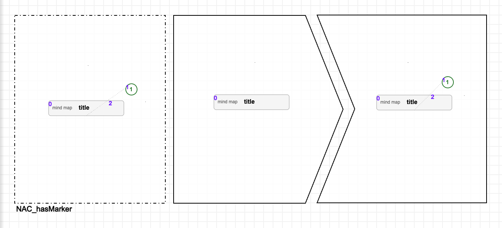
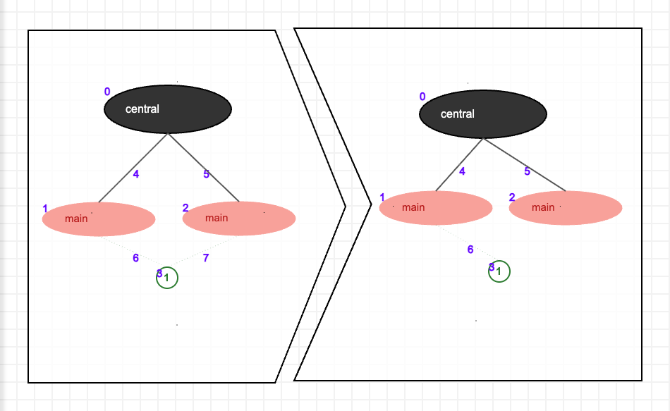
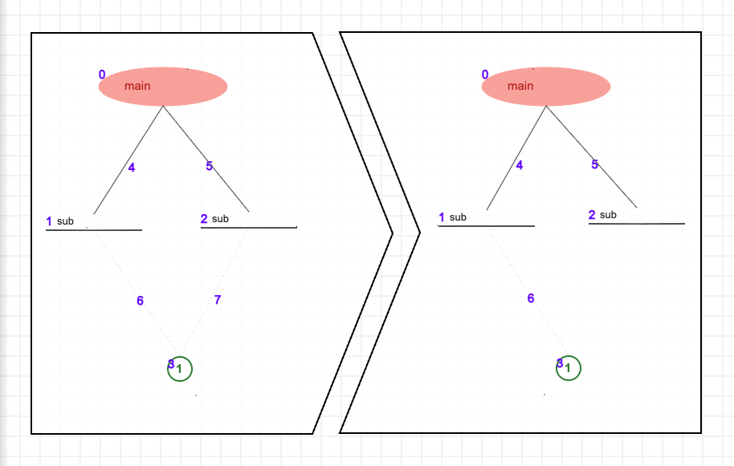
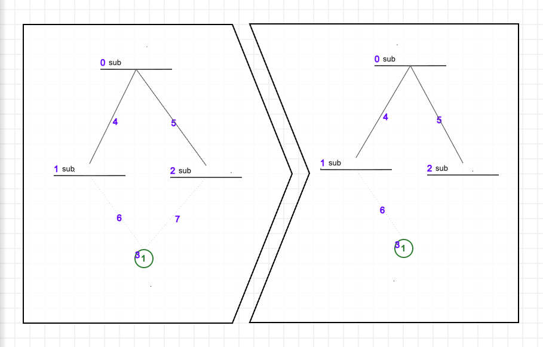
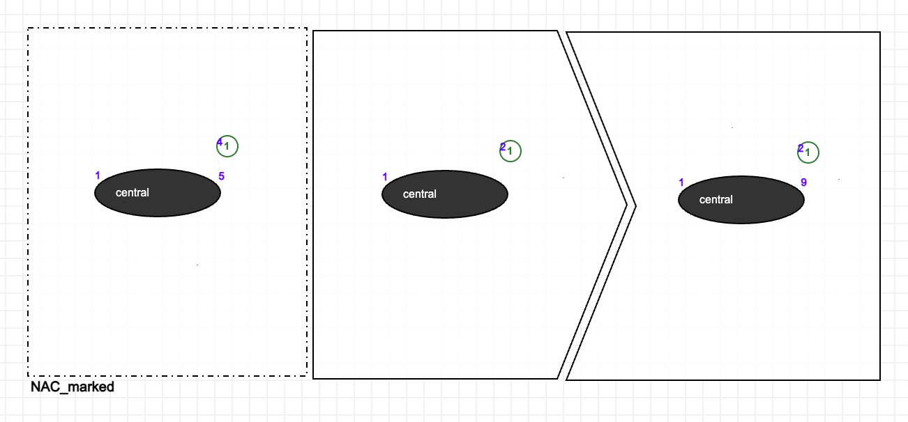
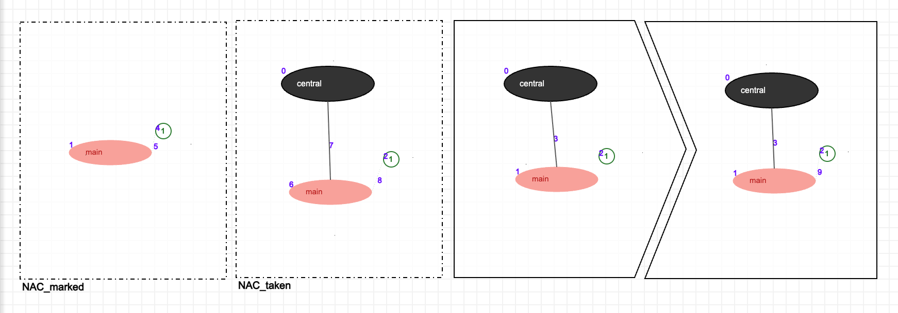
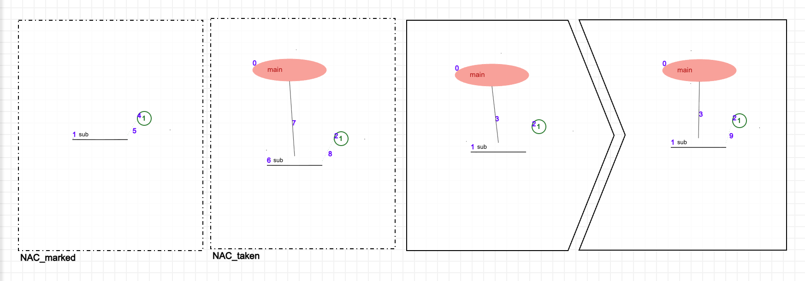
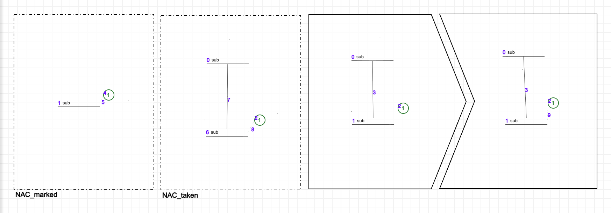
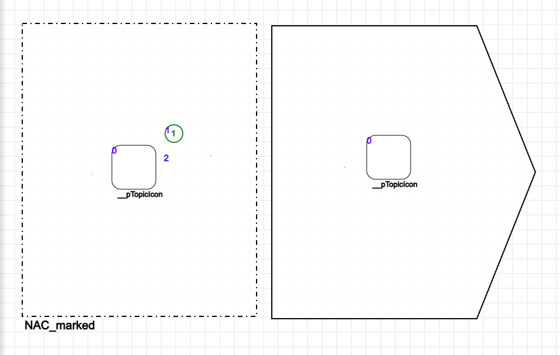
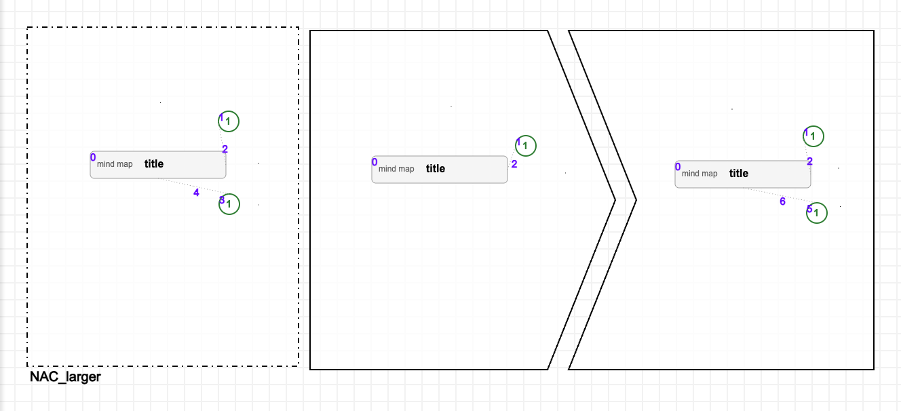
T_AssignMarkers.model. Phases: create first marker, deduplicate marker links, assign markers, check topic markers and create markers. Every rule block loops on itself while successful and goes to the next block when it fails. After the assign rules, if a topic is still unmarked and every marker is already used by one of its siblingsa new marker is created and control goes back to assign phase. When no topic is unmarked, the transformation ends in success.
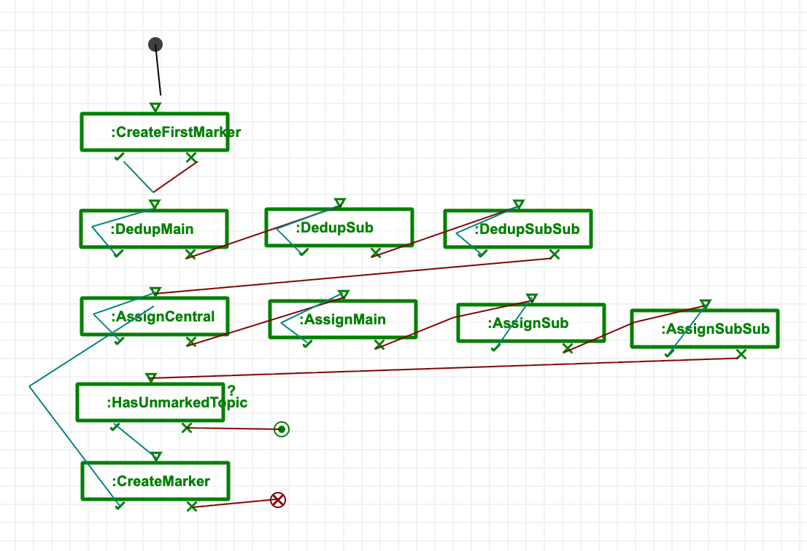
HasUnmarkedTopic is a separate query instead of a second NAC in CreateMarker because of a bug in AToMPM's matcher.
Input research_in.model and output research_out.model. As in the assignment's figure, Implement gets 3, a new marker, since 1 and 2 are taken by its siblings. The central topic and SearchInDatabases get 1, and every preassigned marker is kept.
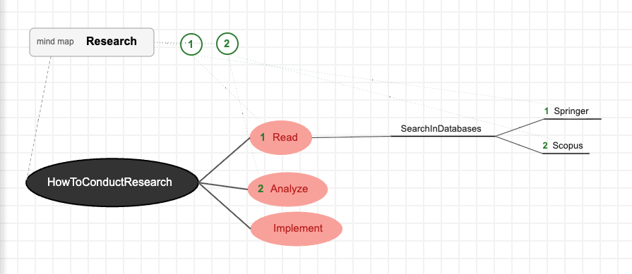
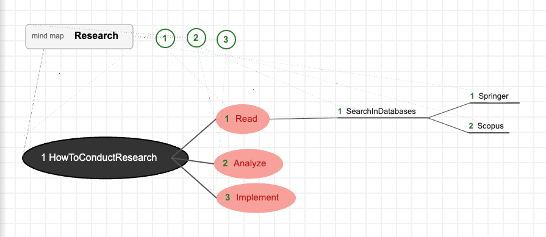
Input courseProject_in.model is the HW1 course project map with conflicts added: markers preassigned to topics, and sibling topics linked to the same marker. In the output preassigned markers are preserved unless they are duplicates, all topics are given a marker, and new markers are created when none are free.
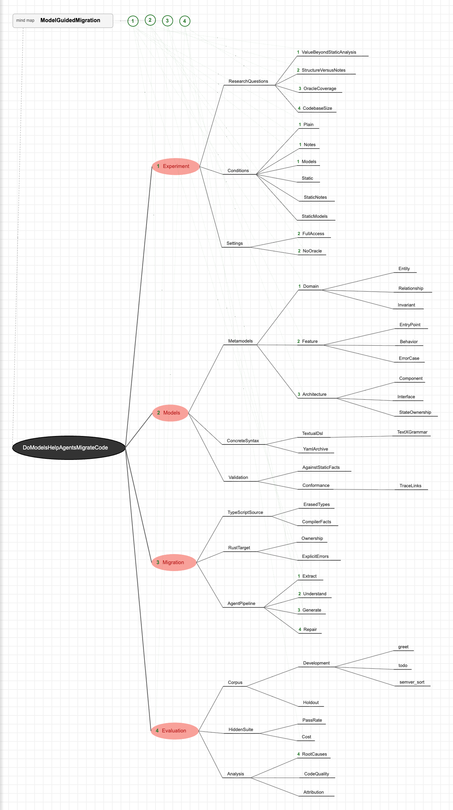
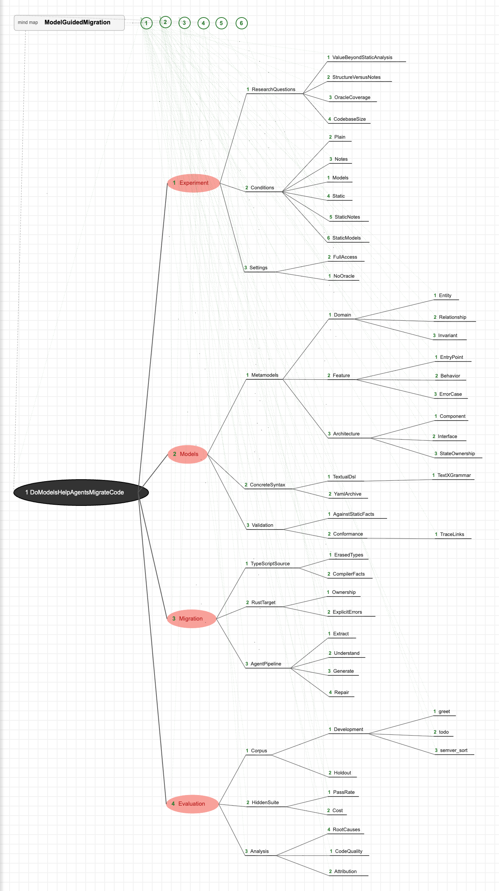
| Property | Description |
|---|---|
| Model editing | Update the topic markers so the mind map conforms to these criteria:
|
| In-place | The transformation rules change the input model; they do not create a new model. (The resulting model is saved as a new model to keep the input model for comparison.) |
| Endogenous | The input and output models (which are the same model, modified in-place) conform to the same metamodel. |
| Horizontal | The input and output are at the same level of abstraction. |
| Syntactic | The semantics of a mind map have no bearing on the transformation. |
Termination: Each dedup application deletes one marker link, and no rules create a shared marker afterwards. Each assign application links one unmarked topic, and no rules unlink it afterwards. CreateMarker runs only when a topic is still unmarked, and creates a marker no topic uses. Therefor the number of unmarked topics decreases on each pass through the loop.
Requirement 1 - every topic has a marker: The schedule only reaches EndSuccess when HasUnmarkedTopic fails, when no topic lacks a marker link. The map always has a marker for Assign_* to use because CreateFirstMarker runs first.
Requirements 2 and 3 - siblings have different markers: After all the Dedup rules fail, no two children of the same parent share a marker. From then on markers are only added by Assign, whose NAC_taken forbids a marker that a sibling has. Markers themselves stay distinct because the only new ones are 1 and the largest + 1.
Bonus 1 - preassigned markers are kept: Only Dedup_* removes a marker link, and only from a topic that shares a marker with a sibling. Its condition leads to exactly one sibling linked to the marker. Assign never touches a topic that already has a marker.
Verification: The transformation can be verified with a checking program that reads the saved input and output models and checks that:
It could be applied to both samples, along with validating the output against the metamodel's constraints. Then run the transformation a second time on the output to check that nothing changes. Small test models with expected results could cover each situation.
I used ETL for the transformations because its tooling was already installed from an earlier experiment.
The ETL transformation that converts a MindMap into a LaTeX document is m2m/ift6253.hw2.mindmap2latex/MindMap2LaTeX.etl. The source metamodel is m2m/ift6253.hw2.mindmap/model/MindMap.ecore (based on the HW1 metamodel, which already has markers). The target metamodel, m2m/ift6253.hw2.latex/model/LaTeX.ecore, is based on the figure in the assignment and was defined in the Ecore graphical editor.
In m2m/ift6253.hw2.mindmap2latex/models/:
| Source | Target | What |
|---|---|---|
example.mindmap | example.xmi | The assignment's example |
courseProject.mindmap | courseProject.xmi | My course project |
| Property | Description |
|---|---|
| Translation | Convert a MindMap into a LaTeX document model that meets these criteria:
|
| Out-place | The transformation creates a new LaTeX model; the input model is not modified. |
| Exogenous | Different metamodels. The input conforms to the MindMap metamodel and the output to the LaTeX metamodel. |
| Horizontal | The input and output are at the same level of abstraction. |
| Syntactic | The transformations rules depend only on the types and relations. What a topic means has no bearing on the transformation. |
The transformation has one rule per target type:
| Rule | Does |
|---|---|
| MindMap2Document | Creates the Document, fills its sections with the MainTopics sorted by marker. |
| MainTopic2Section | Creates a Section, fills its subsections with the SubTopics sorted by marker. |
| SubTopic2SubSection | For depth 1 SubTopics, creates a SubSection, fills its subsubsections with children sorted by marker. |
| SubTopic2SubSubSection | For depth 2 SubTopics, creates a SubSubSection, fills its paragraphs with all of its descendants, flattened depth first and sorted by marker at each level. |
| SubTopic2Paragraph | For SubTopics at depth 3 or more, creates a Paragraph with the topic's name as its text. |
The guards on depth are mutually exclusive, so every SubTopic is transformed by exactly one rule. The ::= operator resolves each child topic to the element created from it by another rule, and sortBy(order()) keeps the marker order. The flattening in below() is what makes topics deeper than level 3 become Paragraphs.
Verification. We can verify the transformation by running it on the assignment's example and comparing the output with the .xmi in the assignment. A specification program could also traverse the input and output models together, confirming that each topic has exactly one counterpart of the right type, name, and order.
The Xtend M2T transformation is m2t/ift6253.hw2.latex.generator/src/ift6253/hw2/latex/generator/LaTeXTemplate.xtend. It is run by the MWE2 workflow GenerateLaTeX.mwe2, which reads the .xmi models from task 2 and calls LaTeXGeneratorComponent to write <Document.name>.latex.
Sources in m2m/ift6253.hw2.mindmap2latex/models/, targets in m2t/ift6253.hw2.latex.generator/latex/:
| Source | Target | What |
|---|---|---|
example.xmi | DocumentName.latex | The assignment's example |
courseProject.xmi | ModelGuidedMigration.latex | My course project |
| Property | Description |
|---|---|
| Synthesis (code generation) | Produce a valid .latex text file from a LaTeX model. |
| Out-place | The transformation produces a new text file; the input model is not modified. |
| Exogenous | The input conforms to the LaTeX metamodel, and the output is text in LaTeX's concrete syntax, not a model of the same metamodel. |
| Vertical | The output is closer to the final artifact. It is source code that can be compiled into a PDF. |
| Syntactic | Each template render structure independent of the content. |
The transformation is one template per metaclass, dispatched by element type:
| Element | Prints |
|---|---|
| Document | The preamble, then each Section |
| Section | \section{name}, then each SubSection |
| SubSection | \subsection{name}, then each SubSubSection |
| SubSubSection | \subsubsection{name}, then each Paragraph |
| Paragraph | The text then a blank line |
The templates follow the containment of the LaTeX model, and the order of the lists was already fixed by the ETL transformation, so the text keeps the marker order.
Verification. We can verify the transformation by generating DocumentName.latex from the assignment's example and comparing it with the assignment's listing; the two are identical. Compiling the output with pdflatex also confirms it is valid LaTeX, and the PDF can be compared with the assignment's figure.
The chain is the MWE2 workflow m2t/ift6253.hw2.chain/src/ift6253/hw2/chain/AToMPM2LaTeX.mwe2. It starts from courseProject_out (the output of task 1), exported with AToMPM's Ecore exporter to atompm/exported_to_ecore/courseProject_outModel.xmi, along with its metamodel, atompm/exported_to_ecore/MindMapMetamodel.ecore. It ends with a PDF.
In m2t/ift6253.hw2.chain/output/:
courseProject.xmi (MindMap model, conforms to repaired AToMPM MindMap metamodel)courseProject.latex.xmi (LaTeX model)ModelGuidedMigration.latex (text)ModelGuidedMigration.pdf (compilation artifact, not from model transformation)The AToMPM exporter has bugs, so its output can't be loaded by EMF as is:
upperBound="Infinity", only the root class's references are containment, and subsubtopics is single-valued.<undefined>.| Step | Does |
|---|---|
| FixExportComponent | Repairs the model export, and saves it as m2t/ift6253.hw2.chain/output/courseProject.xmi. |
| EtlComponent | Runs task 2's MindMap2LaTeX.etl on it and saves the LaTeX model. |
| Reader + LaTeXGeneratorComponent | Loads the LaTeX model and applies task 3's templates to write the .latex file. |
| PdfLatexComponent | Runs pdflatex on the .latex file to produce the PDF. |
The metamodel export was repaired once by hand (m2t/ift6253.hw2.chain/model/MindMapAToMPM.ecore), not in the workflow. The fixes depend on what each reference means (which ones are containment, which are many-valued), which the exporter doesn't record. The metamodel only changes when the formalism does, so a one-time repair is enough.
The chain uses the AToMPM metamodel instead of the Xtext m2m/ift6253.hw2.mindmap/model/MindMap.ecore. The export nests each topic's marker inside the topic, and in the Xtext metamodel Topic.marker is a non-containment reference, so the nested markers can't be loaded.
The ETL transformation and the templates are reused unchanged. We can verify the chain by comparing its output with task 3's: m2t/ift6253.hw2.chain/output/ModelGuidedMigration.latex is identical to m2t/ift6253.hw2.latex.generator/latex/ModelGuidedMigration.latex. To update the PDF after editing the model in AToMPM, export it again and rerun the workflow.
I used gen AI as a translator, tech support, teaching assistant, reviewer, and editor. I believe every material AI contribution to this project has been reviewed or modified by me. Task specific usage is detailed in declaration_IAg.pdf.